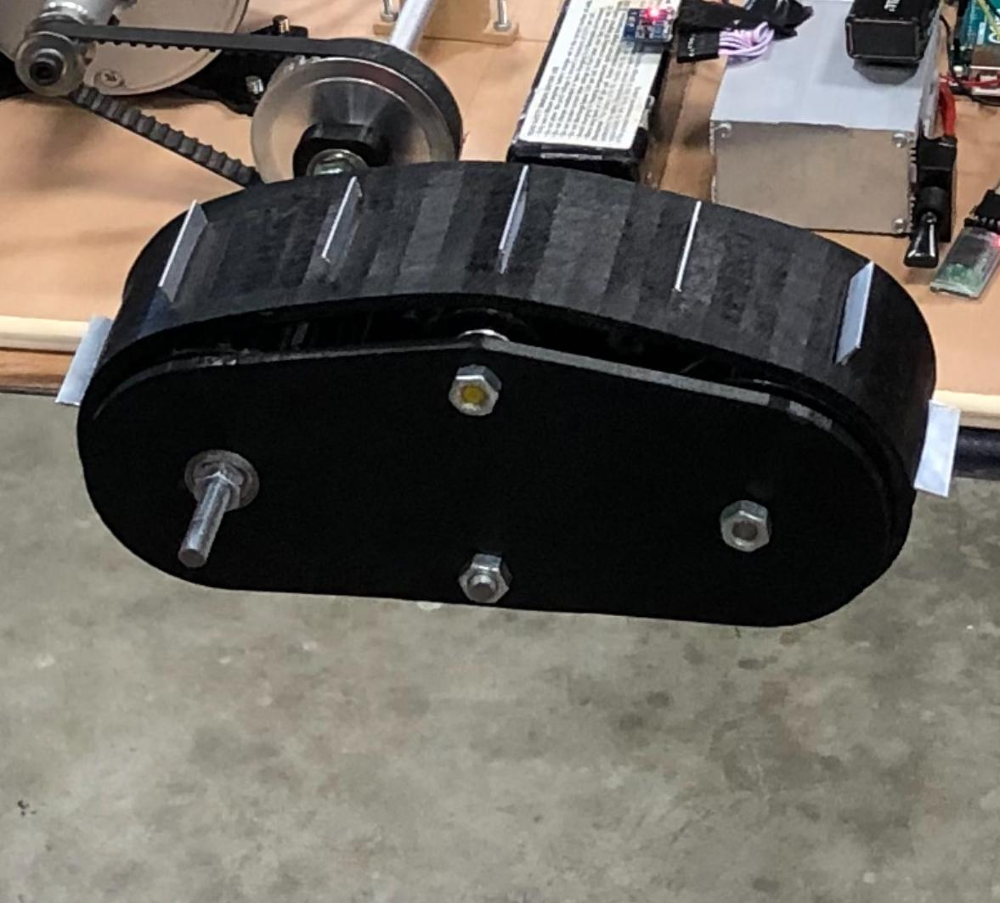

"SnowBoost" Project (60 hrs)
This was my first academical project, realized in high school. This project had to respond to a general problematic asked by the Engineering science Olympiad committee: Transport. With my team, we rapidly decided to design a snowboarding device able to help stuck snowboarders to move when they were on a flat surface. Because among the team of three we were all confronted with the same problem we decided to solve this issue together.

During this project, we designed a 2-part caterpillar in 3D in which we were able to insert metal plates to assure the motricity of the device. In fact, through previous study, we tested the friction coefficient of various polymeric materials and we conclude that the most important critera was the geometric. Then we dimensioned the CC motor to respond to the torque and speed needed to respect our technical specifications. As the motor was dimensioned, we calculated the battery capacity to respect the 4h long autonomy specification and isolated it from the cold to keep the battery specifications at their best. Finally, we created a remote control to handle the speed of the motor in which we also added a LCD screen with the slope and the battery level
Thanks to our hard work, we reached the final contest of the regional Olympiad.